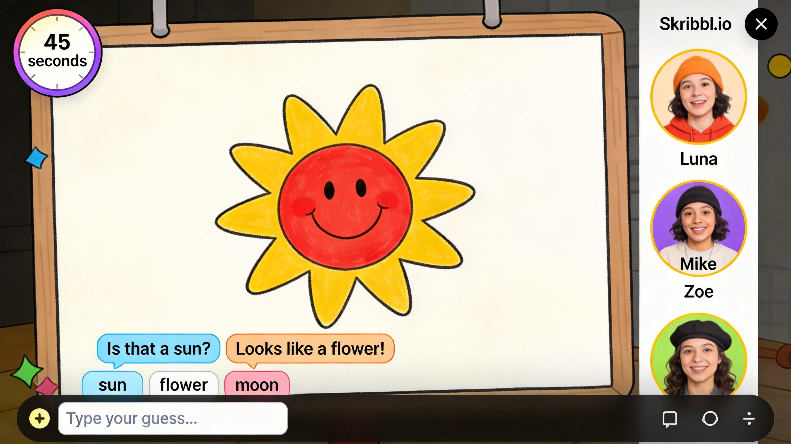
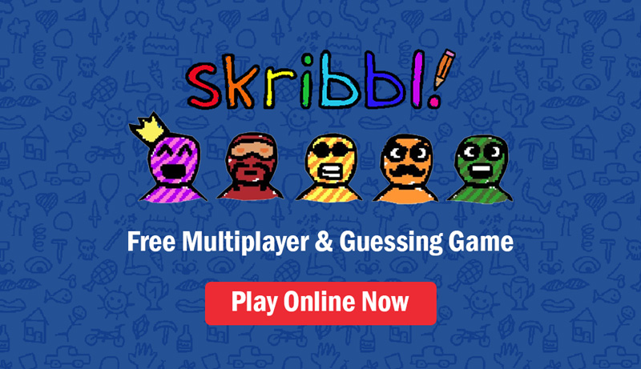
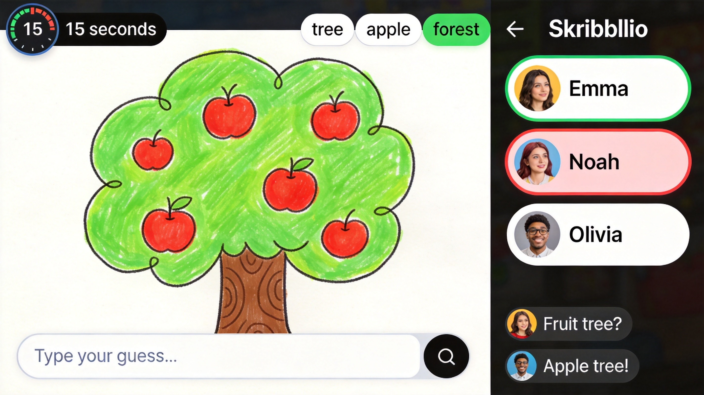
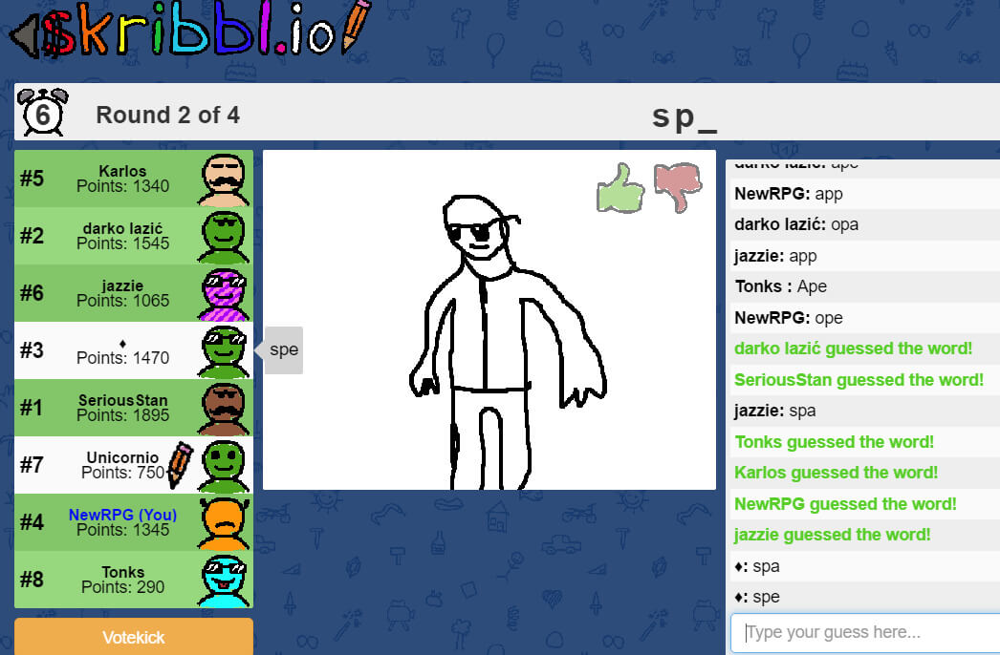

Skribbl.io is a popular multiplayer drawing and guessing game where players take turns sketching given words while others race to guess what is being drawn. It's a fun party game that combines artistic creativity with quick thinking. Whether you're the artist trying to convey the word visually or the guesser trying to decipher the drawing, this guide covers essential strategies for both roles.
🎮 Game Basics

How It Works
One player receives a word and draws it while others try to guess. Points are awarded based on speed—the faster you guess correctly, the more points you earn. Artists earn points based on how many people guess their drawing.
Game Flow
- Players join a room (public or private)
- One player draws their assigned word
- Others type guesses in chat
- Correct guesses earn points
- After all rounds, highest score wins
Scoring
- Guesser Points - Faster correct guesses = more points
- Artist Points - Based on how many guess correctly
- Perfect Guess - Bonus for first correct guess
🎨 Drawing Tips
1. Start with Shapes
Begin with basic geometric shapes—circles, squares, triangles. These form the foundation of any drawing and give guessers immediate clues.
2. Focus on Key Features
Every object has defining characteristics. A car has wheels. A tree has branches. A person has limbs. Highlight these features first.
3. Use Proportions
Make important elements larger. A giant sun next to a house suggests "sunny day." Size communicates importance.
4. Build from General to Specific
Draw the basic shape first, then add details. Don't start with fine details that waste time.
5. Write Letters (If Allowed)
If the room settings allow it, writing the first letter or number of letters provides crucial hints.
6. Use Colors Wisely
Accurate colors provide instant recognition. Red apple, green grass, blue sky—color eliminates many possibilities.
Don't write the word or obvious hints in chat. The game has filters, and cheating ruins the fun for everyone.
🔍 Guessing Strategies

1. Start Guessing Immediately
Don't wait for the artist to finish. Guess based on early strokes. You can always guess again if you're wrong.
2. Think Broad Categories First
Is it an animal? Object? Place? Narrow down the category first, then guess specific items.
3. Use Letter Hints
If letter hints are enabled, use them strategically. The first letter and word length narrow down options dramatically.
4. Don't Be Afraid to Guess
You can submit multiple guesses. Wrong guesses eliminate possibilities and cost nothing.
5. Type Fast
In competitive games, typing speed matters. Keep your fingers ready and type immediately when you have an idea.
📝 Word Lists

Easy Words
Cat, Dog, House, Tree, Sun, Apple, Car, Book, Fish, Bird
Medium Words
Rainbow, Bicycle, Astronaut, Dragon, Treasure, Lighthouse, Penguin, Umbrella
Hard Words
Archaeology, Constellation, Renaissance, Paraphernalia, Chrysanthemum
Themed Categories
- Food: Pizza, Sushi, Burger, Taco, Pasta
- Animals: Elephant, Dolphin, Octopus, Flamingo
- Places: Beach, Mountain, Castle, Museum
- Professions: Doctor, Chef, Scientist, Artist
🏠 Room Settings

Public vs Private
Public rooms have random players and varying skill levels. Private rooms let you play with friends with custom rules.
Key Settings
- Round Time: 60-180 seconds per round
- Rounds: Number of turns per player
- Word Difficulty: Easy, Medium, Hard, or Mixed
- Drawing Time: How long each player draws
Creating Custom Lists
Some rooms allow custom word lists. Create themed lists for holidays, specific topics, or inside jokes.
💎 Pro Tips

Practice basic shapes. Circles, squares, triangles, and lines can draw almost anything. Master these fundamentals first.
Learn common symbols. Stars for sparkle, spirals for tornado, wavy lines for water. Universal symbols communicate quickly.
Skip the eraser. In fast-paced games, drawing over mistakes is faster than erasing. Time spent erasing is time not drawing.
Stay positive. Skribbl.io is a party game. Have fun, laugh at mistakes, and enjoy the creativity.
❓ Frequently Asked Questions

Can I play Skribbl.io on mobile?
Yes, Skribbl.io works on mobile browsers. The touch controls allow both drawing and guessing.
How do I create a private room?
Click "Create Room," customize settings, and share the room code with friends to invite them.
What happens if I draw the wrong word?
You can't change your word. Work with what you have—sometimes creative interpretations lead to fun moments.
How do I improve my drawing?
Practice basic shapes and proportions. Study how objects are constructed from simple forms.
Is Skribbl.io free?
Yes, Skribbl.io is completely free. No download required—just open your browser and play.
📝 Conclusion
Skribbl.io is a game of creativity, quick thinking, and fun. Whether you're drawing or guessing, the key is to communicate effectively and have fun. Remember: it's not about artistic perfection—it's about getting the idea across and enjoying the game with friends!
Ready to play? Jump into Skribbl.io and test your drawing and guessing skills!
Last updated: January 20, 2024
Written by the iogameguide.com team